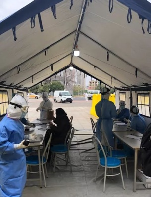

你见过武汉方舱医院吗？远远地透过屏幕？但你走近看过吗？住在里面的人，每天的生活如何？他们吃什么？他们怎么上厕所？他们能洗澡吗？他们交流什么？他们最害怕什么？有一位住在武汉塔子湖方舱医院的病友，发来了一篇长长的全记录。
前篇
不久前，我曾以为自己战胜了病毒，但在嘚瑟了几天后……
啪 脸真疼
我自身的症状确实是已经消失了，直到发文的今天，从来就没有反复过，一直都很正常。
但这个病毒狡猾在虽然我好了，但在接下来的一段时间内，我仍然可以传染给别人。
在我还发烧的时候，就上报了情况，在我症状全部消失后的第5天，社区打电话来通知我去做核酸检测。当时我想着反正已经好了，做不做没所谓，既然通知了那就去吧。
没想到，2天后结果出来，是阳性！
完全出乎意料！据我了解，核酸检测可能会因为试剂的质量、取样的位置、取样位置的病毒浓度、人员的操作等原因出现假阴性，但如果结果是阳性的话，那基本就是确定的了。
也就是说，那时即使我症状消失已经5天了，但我仍然携带着病毒，仍然具有传染性。（这一点大家要格外注意，症状消失了，自身已经好了，也不代表就可以解除隔离。）
核酸结果出来的当天，社区就安排我去了隔离酒店。
我住的是一个快捷酒店，提供一日三餐，每日4次测量体温，没有其他医疗服务，个别药品可以提前申请发放。
隔离酒店的作用相当于一个单独的隔离空间，所以以往的酒店服务是没有的，缺失的生活用品可以自行叫跑腿购买或者叫家人送来。
我所在的这个酒店隔离点是由新村街社区卫生服务中心的6名工作人员来管理的，我在此想感谢她们，她们为这个隔离点的患者做了很多很多。
没住几天，工作人员通知我，核酸确诊了的人需要全部转运到方舱医院。
进入方舱篇
13日中午，疾控派车过来接我，车上还有3个人，都是一起去塔子湖方舱的。
塔子湖方舱即江岸方舱，是由塔子湖体育馆改造的，可以容纳1000人。
下车后门口有个帐篷，进来了以后先登记、填表，发了一本患者手册。患者手册里详细讲解了方舱医院的作用和功能，以及相关收治流程。
| - | - |
|---|---|
|  |
整个体育馆被分成了A、B两个大区，每个大区又分为了一片片小的隔离段，男女分开。
我登记完后进去跟着护士来到了我的床位，床上有电热毯、枕头、一床薄被子、一床厚被子。
接着有护士来询问我的基本情况，有什么症状、有没有其他疾病等，然后测量体温和血氧心跳。
这是每个人发的物品。
摆开来看，有牙刷牙膏、水杯、卷纸、抽纸、香皂、接线板、保温壶、充电器、眼罩耳塞、小台灯、拖鞋、毛巾、盆子，一共10多件。

收拾完毕。我来的时候刚好是中午，护士随后送来了中餐：葱烧基围虾、腊肉笋子、莴苣烧鸡、豌豆玉米，外加一个苹果，伙食不错。
吃饱喝足以后我就开始了方舱的探索。
方舱探索篇
现在，有请凭感觉出炉的塔子湖方舱镇楼平面图！
跟着平面图，从入口开始，Let’s Start！
进入舱内，首先看到的是图书角。塔子湖方舱一共有3个图书角，进门这个是最大的。（平面图星标）
右边是一排空调，全部设置在28℃。场内还有很多这样的柜机，13日当天天气也还好，所以里面并不冷，我晚上睡觉时没开电热毯，盖厚被子感觉略热。
继续往前走，前方是一个临时搭建的医护工作站，左右两边是分隔断的病床区。
再往前走，靠近护士工作站，右手边是一排开水机和微波炉，还有分类垃圾桶。（平面图椭圆标）
| - | - |
|---|---|
沿工作站的外围一圈放了若干椅子，给医护人员暂时休息。
加油！王媛媛！
工作站背面，床位区门口，一排轮椅，提供给行动不便的人。
接着来到我所在的这个床位区，这是一片很大的区域，有部分屋顶是玻璃，可以看到外面的天空，感觉视野很开阔。
我进来的时候，塔子湖方舱才刚刚开舱，所以还有很多空床位。
从这片区域出来往右走是一个连廊，两边安排有床位，这片区域相对冷一点。
往前走，左手边有个放了很多电脑的房间，活捉一枚看书的小哥哥，书名是《现代礼仪大全》。
塔子湖方舱分为A、B两个区，上面的区域全部是B区，经过这道门就是A区了。
进去后左边是护士站，右边开水区。
A区的床位。
从A区出去就是简易移动厕所和洗脸池。
整个厕所的数量是足够的，任何时候去都不需要排队。
洗脸池出来的是热水，但在洗漱高峰期会有点供应不上，可以错峰去。
整个塔子湖方舱就全部溜达完了，唯一不足就是没有洗澡的地方，对于核酸一直未转阴、需要长期住在这里的人很不方便，希望后期可以完善。
方舱生活篇
01、方舱的餐食
方舱每天的伙食都不错。
早餐一般是面点鸡蛋牛奶，午晚餐是3荤1素，外加一碗汤或者一个水果。如果没吃饱，可以找护士再要一份。
)
偶尔还发个零食。
02、入住方舱的人们
按照患者手册上写的收治标准和我这几天的观察来看，目前我这个方舱收治的多数是和我一样的，没有什么症状了，但是核酸是阳性，还具有传染性的病患。
我这个区域之前有个大姐一直高烧，待了两天就被120转去医院治疗了；还有个婆婆因为一直胸闷，也没两天就转院了，所以方舱的医疗通道是很畅通的。
大家会自发地进行各种各样的活动。
每天都会练舞的姐姐，动作特别专业和优美。
写毛笔字的大叔，沉心静气。
织毛衣的大姐。
看书的人们。
每天大厅都会分时段响起广播，播一些防疫知识宣传和相声小品等节目。然后我发现，只要是放音乐，叔叔阿姨大哥大姐们就开始跟着节奏摇摆起来了。
日子一天天过去，在第四天的时候，“民间艺人”们终于聚集在了一起，组成了一支支舞蹈小方队。瞧瞧，咱离胜利大会师的广场Party还会远吗？
)
出太阳啦，大家跑到外面去晒太阳，活动活动。
03、我的方舱生活
晚上，场馆里的灯都是不关的，有发遮光眼罩，所以影响不大。
14日晚上，天气预报明天要降温下雪，当晚就给大家发了棉袄。
还记得一开始发放的物品里有个小台灯吗？这里晚上是不关灯的，所以我一直很纳闷发这个是干嘛？我也从来没用过。
直到第二天晚上，看到大姐们拎着到处走，我才发现，原来是晚上去上厕所的时候用的。因为简易厕所内部无法装灯，门一关就全黑了。
我一开始不太理解，这小台灯跟手机电筒也没区别，还要一直拿在手上，手机的话还可以临时放荷包里，为什么大家不带手机去上厕所？
直到我看见了一个小哥哥的神操作，当时没来得急拍下来，我来演示一下。
台灯的灯杆是可以弯曲的，直接挂在脖子上，解放双手，行走的移动光源有没有！
这才是带着台灯上厕所的正确打开方式嘛。
我进来的第三天中午，核酸检测设备到了，以后方舱的患者可以直接在舱内做检测了。
第四天，到了制氧机。另外，CT机也在调试中了。
晚上发了抗疫心理自助手册，大赞！这个时候，对病人也好，对医护人员也好，心理疏导都很有必要。
04、我接触的方舱工作人员
塔子湖方舱里，来自天津的医护人员数量最多，其次是河北。我所在的B区，基本是由天津的团队负责的。
我特别喜欢她们带卷儿的普通话，很亲切。从这几天的相处和观察看，她们每一个人对患者都是主动地去照顾，主动为患者考虑要做些什么，真的很感谢她们！
交接班进行时。
帮助病人们。
来自张家口医护团队的灵魂画手，热干面，大家看出来了吗？
交完班的医生护士们排队等待着出隔离区，依次处理身上衣物。
每个医护人员都在外层防护服的胸前或者背后用笔写上来自的地区和医院名，是医生还是护士，以及自己的姓名。
从我的观察发现，他们每个人做完整个流程，至少需要10分钟，整个交完班的医护团队至少需要1个小时才能全部走出隔离区。之后跟护士聊天得知，她们全部搞完到酒店实际要2个小时。
清洁人员在每天的三餐时间过后都会更换垃圾袋、清理地面积水、清扫地面污渍。
厕所清洁。
电工师傅刚处理完一处电路故障。
病区消毒。
)
在我来的那天晚上，我看见一个医生提着个电暖炉走了过来，我就跟在了他后面。
一开始我以为他是给哪个病人送的，原来他是给室外帐篷里的医生送的，就是我进来时登记填表的地方，这么冷的天，护士们一直坐在外面做入舱登记工作。
15日，武汉飘雪后的方舱外。
)
应该是在方舱门口执勤的工作人员，堆了个小雪人放在防护栏上，莫名觉得好可爱。
05、破冰之旅
17日的中午，在天津医护团队的策划下，在这个特殊时期，在方舱这个特殊环境下，一场生日聚会隆重举行了，寿星们是全舱2月份生日的病友。
一个超大尺寸的名牌蛋糕，另外每个寿星都会再单独发一个8寸蛋糕。
人是群居动物，除了基本的生活需求还有精神需求，特别是现在身处武汉的人们和医护工作者。
这次的疫情、这次的方舱模式，对医生、病人都是陌生的、未知的。
这次的生日聚会就像一次情感的破冰之旅，拉近了彼此的距离，医生不再是病友不舒服时才叫的人，病友也不再担心会不会让医生觉得没有照顾好他们。
人与人之间距离的坚冰正在融化。
生日聚会之后，当天晚上，开水区旁。
由于洗脸池在外面，有些人在开水区这里洗漱，导致地上有很多积水，护士多次劝阻，但效果不明显。
这天晚上，一位热心的大妈主动接过护士手里的广播喇叭，拖了个凳子过来坐定，一连串气势恢弘的武汉话脱口而出。
“勒里滴开水是接到huo滴，不是洗口用滴，洗口到外面克洗，把个水泼到地哈到处是滴，黑死个人滴。再说一遍，这里不紧泼水，要洗到外头克洗！”（这里的开水是接着喝的，不是刷牙用的，刷牙去外面刷，把水泼在地上到处都是，吓死人。再说一遍，这里不准泼水，要洗漱去外面！）
比起护士的温柔提示，大妈威力十足。
生日聚会的第二天，由舱内的病友组成的志愿者团队也建立起来了。
志愿者们帮助护士给各个区域的病友发放餐食。

护士和上文提到过的每天练舞的姐姐教志愿者们跳舞，等音响到货，咱的广场舞就要搞起来了，我这个区的婆婆们都跃跃欲试了。
舱内有很多消毒洗手液，护士教志愿者团队七步洗手法，再由志愿者们教给身边的人。
方舱就像是一个临时组建起来的社区，让大家都参与到日常的工作中来，让整个舱内的氛围活跃起来，对当下这个时刻的心理调节有很大的意义。
06、一些闲聊
在护士坐着休息的时候，我跟她们聊了一会儿。
一个天津北辰医院来的护士跟我介绍，她们每次进来就不吃东西不喝水不上厕所了，虽然是6小时一班，但是前后穿脱衣服很费时，往往可能在交班后两小时才能回到酒店，然后才能吃饭。
天津某医院的一个医生说，她们都是第一次做这种形式的救援，一切都是在慢慢摸索，一边做一边完善这里的一切。她们让我收集周围人的意见，对于各个流程环节有哪些地方需要改进的，还询问我们喜欢什么样的娱乐活动，她希望能够把这里变得越来越好。
对了，她就是那个策划生日聚会的人。
不过医护们普遍都有的反应是，这里年纪大的人说话听得不是太懂。（笑）
每日流程篇
这里的医护人员每个团队是隔一天排一次班。每天4班倒，6小时一班，交接时间依次是8点、14点、20点、2点。
交接班时医生们是非常忙碌的，如果有事要找医生护士的，尽量避开交接班的时间。
每天护士查房的时间依次是6点、9点、16点、22点。（大致时间）
10点左右会有医生过来巡视，询问病人情况。

上面的是每天的例行巡检，如果有症状严重的病人，比如高烧不退，医生和护士就会很频繁地单独过来询问身体状况，一直不见好转的话，就会安排120转送医院。
每日三餐的送餐时间分别是7点、12点、18点。（大致时间）
下面是每日的流程图，更加直观。
一些碎碎念
一个方舱医院的建成并不是搞几个隔断，摆几张床就成了的。让它运转起来也不是收一些病人，派几个医生过来就完事了的。
在这么短短的时间内，让能容纳1000人的临时医院，从建成到每天有条不紊地运转下去，并且还在不断地慢慢完善，需要的是多方人力物力的协调支持。
从一开始没有广播，到餐点广播，再到平常时段也偶尔放点歌。
从只有基本生活保障设施，到有空气消毒净化器，再到开始发放针对疫情的心理辅导书籍。
从只有正常的餐点，到开始增加发放零食。
从只有隔离居住功能，到开始可以进行核酸检测，再到可以做CT。
从一开始每天只有吃饭睡觉，到各种活动越来越丰富。
这一切都在慢慢地越来越好。
从我进来至发文的前一天，方舱变化轴线如下。
我们共同的敌人是病毒，我们隔离在这里只是为了让这次的疫情更快地被消灭，让我们的社会尽早地恢复正常的生产运转。
方舱的生活条件可能没有在家里方便，但在当下我们只有和医护人员以及工作人员相互配合，才能更快地打赢这场战役！
不是每个人都要成为英雄，但我们每个人都是抗疫的一分子。
截至发文的时候，我才知道塔子湖方舱二楼的病区开放了，从进来到现在一直负责我们区域的天津的医护们都调到二楼去了，大家都非常非常舍不得。
大家都争相邀请医生护士们疫情过后到武汉来玩。
一个婆婆说，不要你们钱，全部费用我们包了！
我的眼睛也湿润了。
来源：兜爷麻麻不睡觉，作者：麦兜妈
本期编辑：胡程远、蒋川